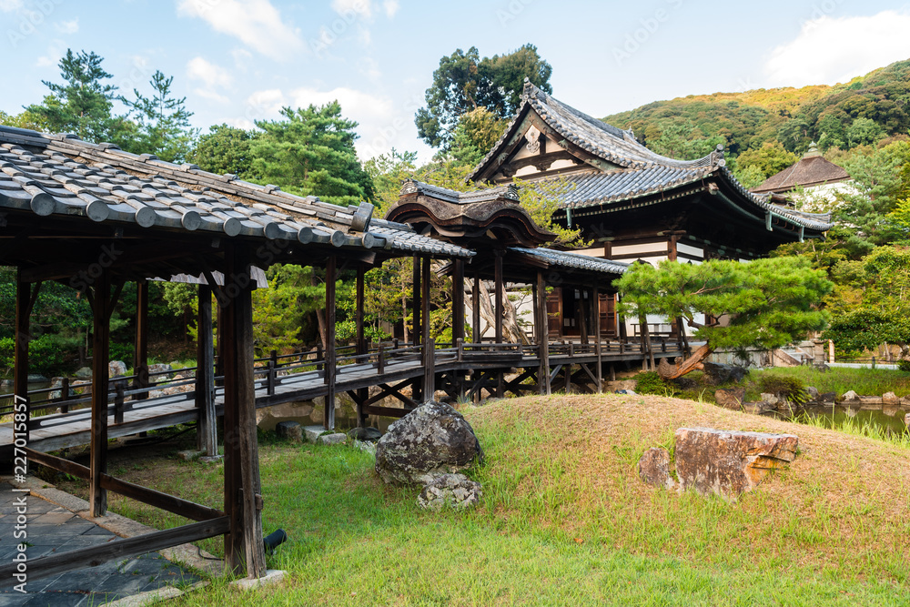

Визначні пам'ятки 🌸

Святилище Фушімі Інарі з тисячами червоних воріт Торії, Золотий павільйон Кінкаку-джі та мальовничий бамбуковий гай Арашіяма.
Кухня та гастрономія 🍵
Традиційний зелений чай матча, вишукані обіди у стилі кайсекі та унікальні солодощі з квасолі аboundують у місцевих чайних будиночках.
Культура та традиції 🎋
Кіото — це центр чайних церемоній, мистецтва гейш у районі Ґіон та медитативних садів каміння, що сприяють внутрішньому спокою.
Особисті враження ✨
Прогулянка стежками бамбукового гаю рано вранці до приходу інших туристів стала найумиротворенішим моментом усієї нашої подорожі Японією.